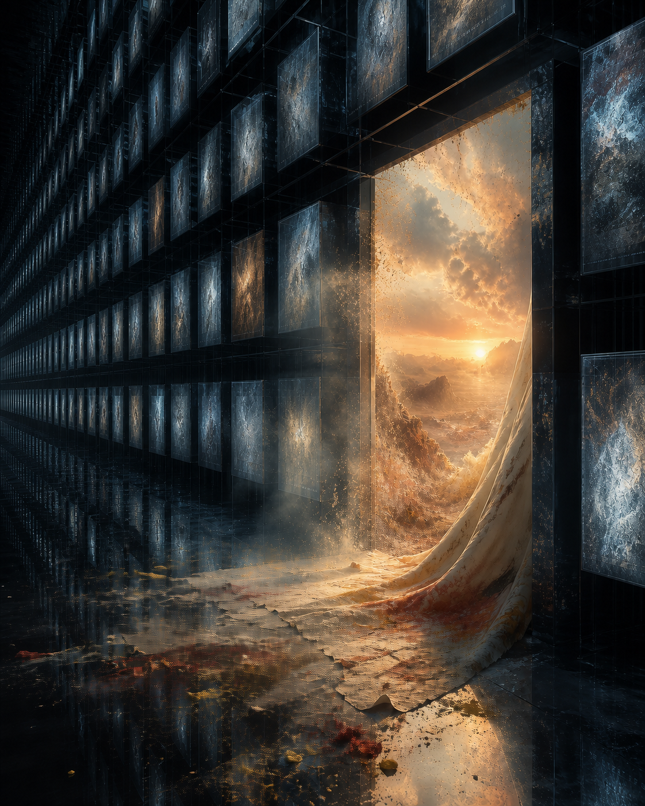
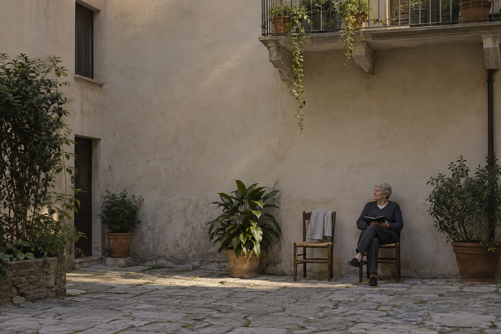

Digital studies
estona815 · Selected digital visual works
These works were made with AI assistance. Each caption records its medium and documented production date.

The Unrendered Door
Documented production: 29 August 2026AI-generated digital image, produced using OpenAI image generation and editing directed by Codex. Production was delegated to AI; no manual drawing or external image assets are claimed.

El Día Prestado
Documented production: 22 September 2026“Una silla guardada”, frame 14 from a 15-image AI-generated fictional visual series. All people and places are invented; this is not documentary photography. Generated with OpenAI image tools through Codex; no real-person reference photograph was supplied.